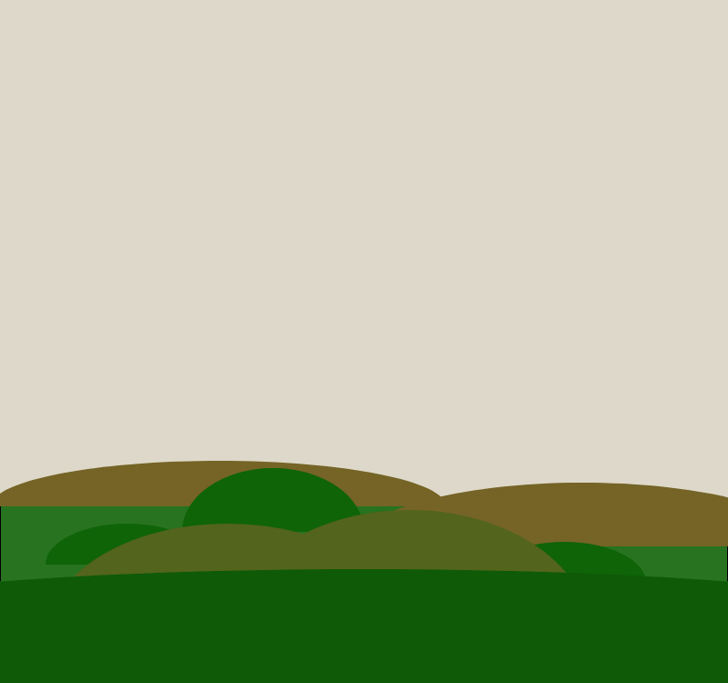
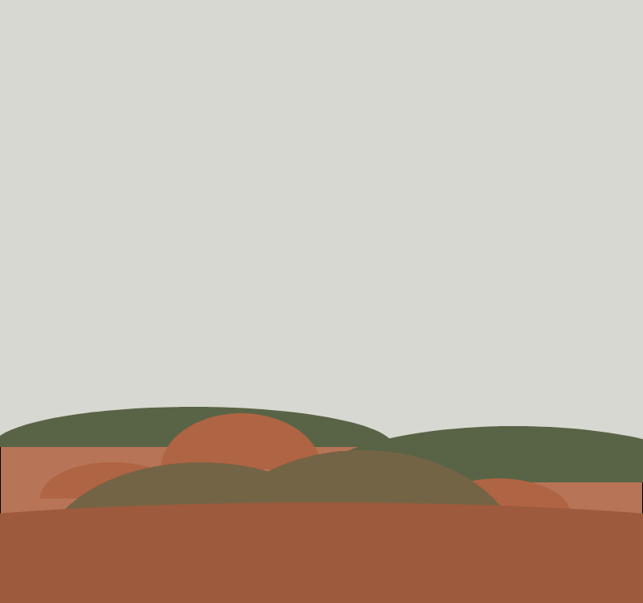
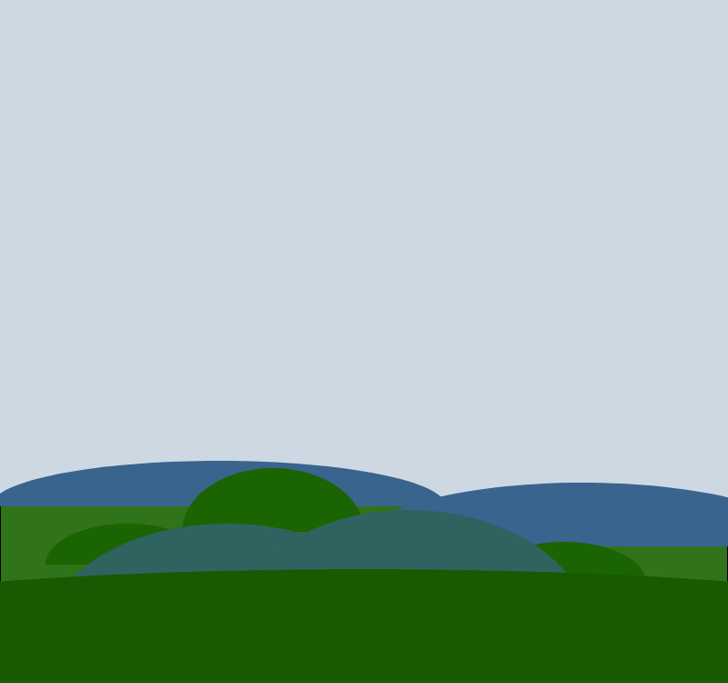

Week 2 at RC (The sun part 2)
Gosh, when did I last update y’all? It’s been a week! Here are some things I’ve been up to:
From 3D to 2D
My project at RC has been to model the sun’s path over the course of the year so that it can be used to help plan garden plots! Also so that I can learn something about frontend!
This week, while I ported some functions to calculate a sun’s elevation / azimuth (degrees away from North from the perspective of the viewer) to Typescript, the act of working on this port caused my project to spawn some side project ideas. I want to make some astronomically accurate art with these calculations! I was especially inspired by what people in my batch have been doing with p5.js, so I’ve been using that this week. My idea is to represent the sun’s phase in the style of how moon phase posters/calendars look. Here’s where I’m at right now:

The elevation and location of the sun is chosen based on the hard coded date/location– Berkeley CA on November 11 2021. Next I’m going to place multiple of these from different months of the year in a grid and let the user choose a location. Also…maybe shadows? Also…maybe finalizing the color palette instead of randomizing it? If I stick with randomizing though, I’m going to move over to HSB mode. Bonnie in my batch recommendd this blog post on HSB vs. RGB which was super instructive.
Here are some bloopers, for your enjoyment. They’ve been hilarious to accidentally make, nothing like hitting save and seeing the sun go upside down. Still working on the art piece, but I’ll share as I go next week and show you the final project too.
 
Some thoughts on frontend
For no particular reason, I’ve been working on this project primarily in Typescript and not vanilla Javascript. Something I didn’t realize until I started actually working in Typescript is that the Typescript itself never actually gets executed. A program runs to transpile Typescript into Javascript and then the Javascript gets executed. This is very different than the other approach of “add some types to this dynamic language” that I’ve used before, namely Hack. Hack actually runs on HHVM, it doesn’t first transpile into PHP to execute. The lack of runtime safety is a little disconcerting, especially in combination with this bug I hit where tsc run on a single file doesn’t use your .tsconfig. (Hack also doesn’t have runtime safety though, but it’s not because it transpiles it into PHP). If I got any of this wrong, lemme know.
I lost a day trying to understand how to use modules this week. There appear to be just so so many strategies and so many different concepts to understand. I eventually gave up and forked off of this great starter project for using typescript with p5.js and manually added all the JS files I needed to my .html in a row like this:
<script src="https://cdn.jsdelivr.net/npm/p5@1.4.0/lib/p5.js"></script>
<script src="https://unpkg.com/p5.createloop@latest/dist/p5.createloop.js"></script>
<script src="./sketch/calc-azimuth-elev.js"></script>
<script src="./sketch/sketch.js"></script>
Maybe next week I’ll figure out how to use modules? I’d love to isolate my sun path calculations away from the sketches, of which I want to make many, but for now I think a separate file will work for me.
Programming outside of work
It’s been a treat to get to chat with friends about computers who I don’t work with! A few years ago, Lisa worked on a moon clock and she’s been great to talk to about Astronomical Algorithms, and the sun art I’ve been working on is inspired by seeing her IRL moon clock.
RC has been a lovely way to see what other people are working on and how they approach their work. I had a bias/block against Processing after trying to use it in 2009, that I didn’t realize was rooted in 2009-era Java and not super relevant for how warm and welcoming it is to use now. Seeing people’s creative coding projects in the online editor made me take a closer look at it!
If you’re one of the people who’s been texting / messaging me about these blog posts, I’ve been really enjoying that!! It’s been great to talk to people while learning how to do things in frontend who know way way more about it than I do.